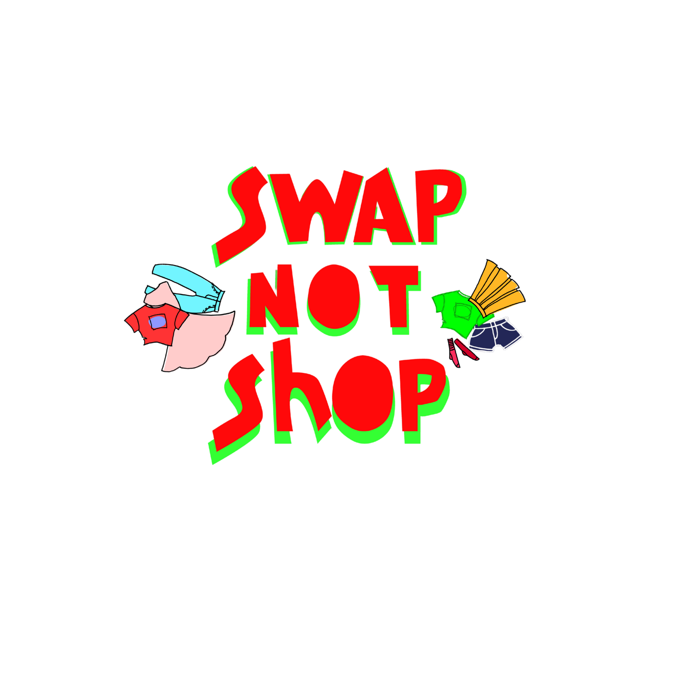

You Chose the Ethical Path
The cotton grows under fair labor and sustainable water use. The thread glows softly — clean, healthy, alive.
 Continue
Continue
From seed to seam to landfill — every shirt has a story.
Every year, 100 billion garments are produced globally.
Follow one shirt’s journey and see how your choices shape its fate.
Start the JourneyThe beginning of a T-shirt’s life. Two cotton fields, two realities. The fashion supply chain is heavily reliant on water, particularly for growing cotton, which is one of the thirstiest crops. It can take up to 2,700 liters of water to produce a single cotton t-shirt—enough drinking water for one person for 2.5 years. Furthermore, the dyeing and finishing stages of textile production are responsible for up to 20% of global industrial water pollution. Chemicals, including heavy metals and toxic dyes, are often released into local waterways, severely impacting ecosystems and human health.
The cotton grows under fair labor and sustainable water use. The thread glows softly — clean, healthy, alive.
Continue
The field is overworked. Labor conditions are harsh. The thread begins to fray.
ContinueA rack of possibilities. Every tag tells a different truth. The low cost of fast fashion is often subsidized by poor labor practices in developing countries. Textile workers, who are predominantly women, frequently endure unsafe working conditions, excessively long hours, and wages far below a living standard. The pressure to produce large volumes of clothing quickly and cheaply contributes to human rights abuses, including restricted union rights, lack of safety measures, and, in some cases, forced or child labor throughout the supply chain.
The shirt is cheap and shiny — for now. The thread dulls quickly.
 Continue
Continue
The shirt has history — and potential. The thread strengthens with reuse.
ContinueSomething hangs quietly. Your habits decide its fate. The decision to toss a shirt after just one season is common, but it has massive consequences. This shirt becomes part of the $460 billion worth of clothing that is wasted globally each year, most of which heads straight to the dump. The textile, often a blend of natural and synthetic fibers, takes hundreds of years to break down in a landfill and contributes to the mountain of waste. By cutting the shirt's life short, you maximize its carbon footprint, as all the resources, water, and labor used to create it are rendered useless almost immediately.
The fabric dulls. The thread weakens.
ContinueSmall tears mend themselves. The thread glows again.
 Continue